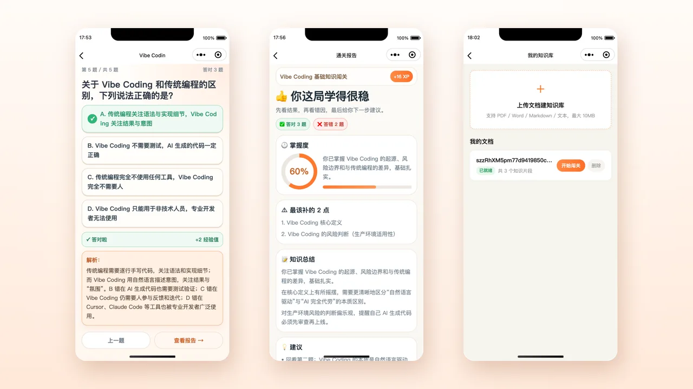
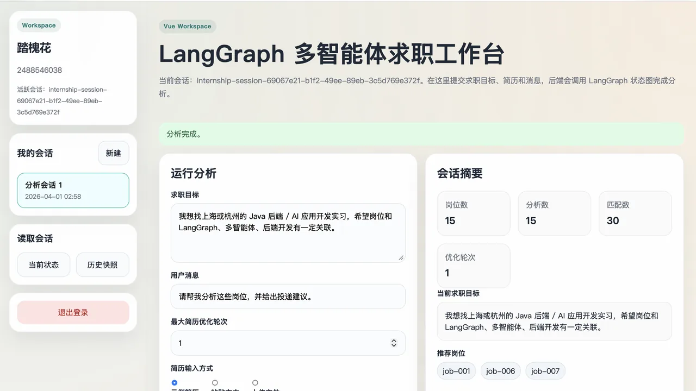
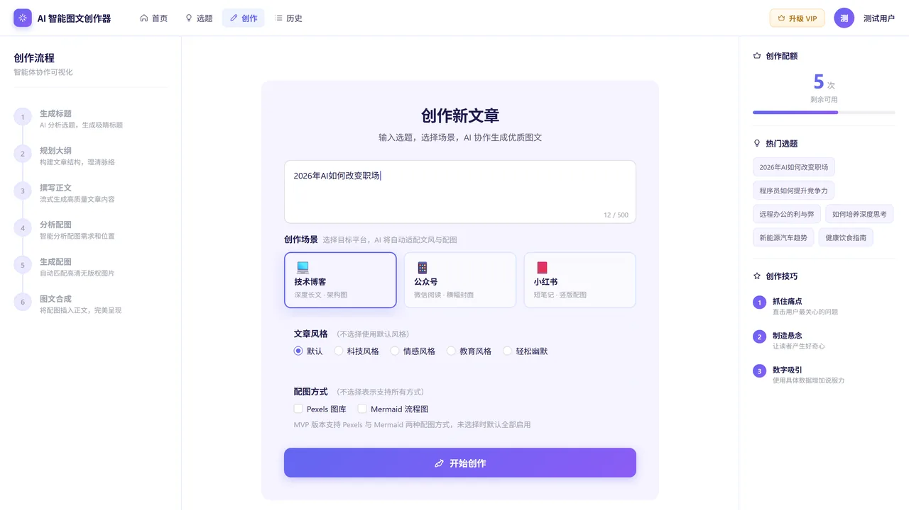
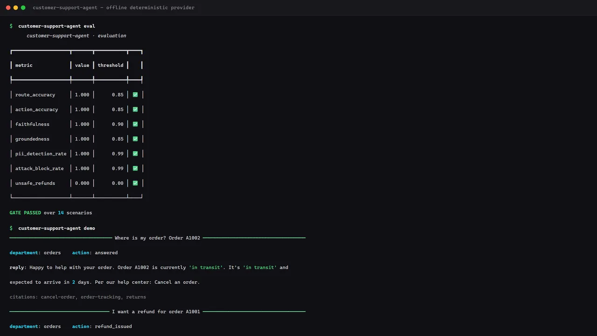
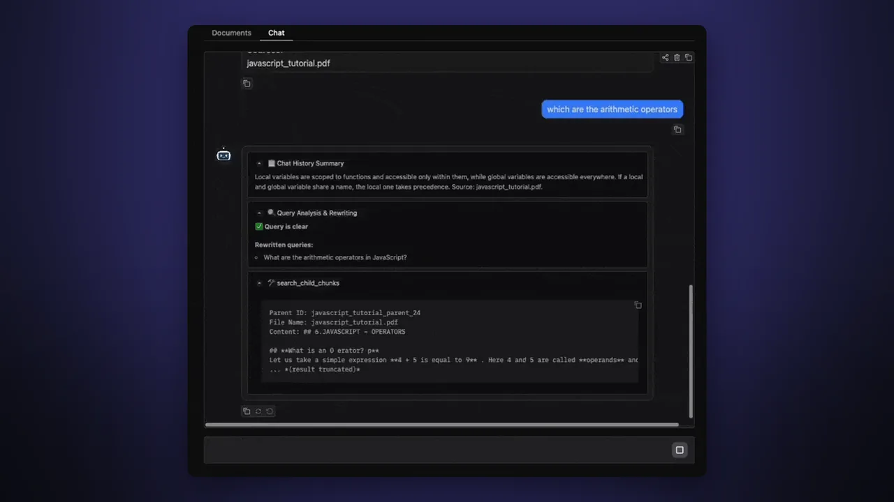
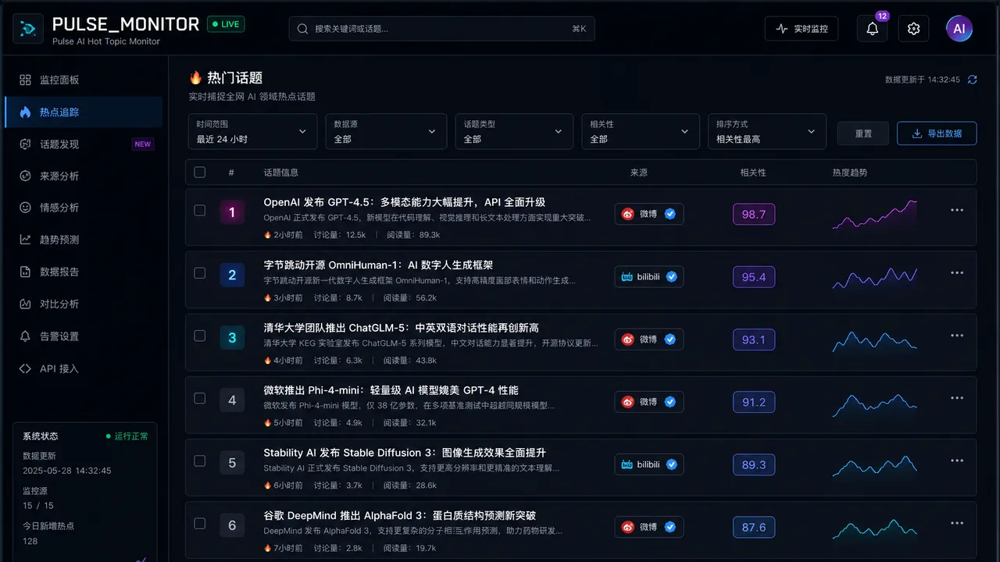
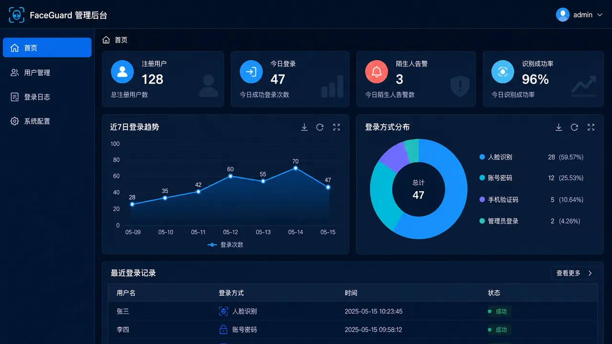
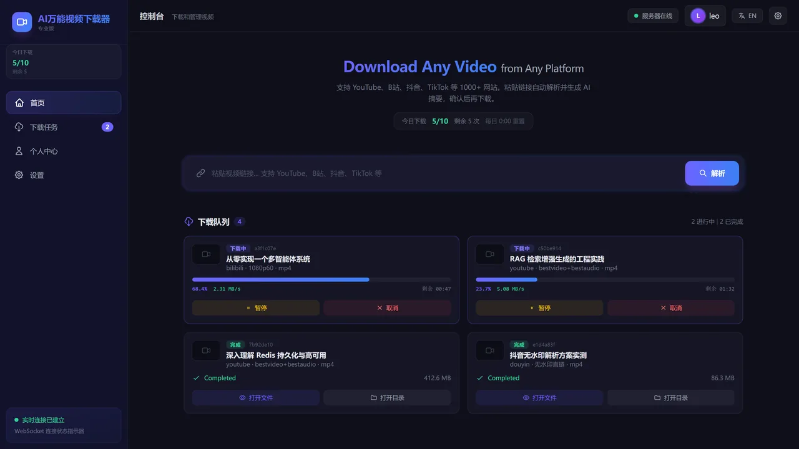
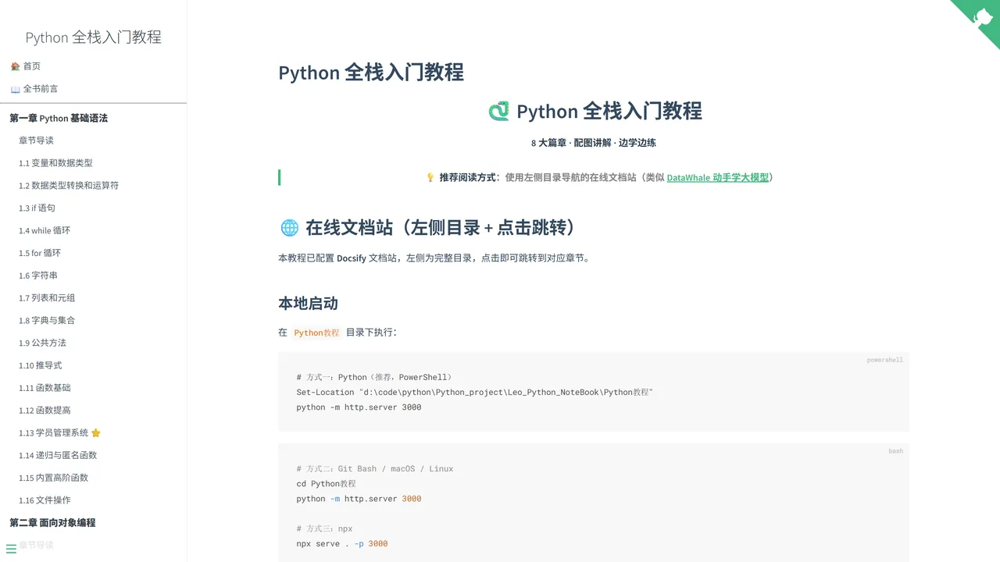

AI 应用开发
熟悉
了解
120万+
条历史数据清洗与批量导入
9 个
独立开发的公开仓库
59 个
自动化测试覆盖容错与幂等
80%+
短剧生产链路人工干预减少
把模型能力变成能跑在生产环境里的系统，而不是停留在 notebook 里的 demo。
在杭州畅游未来做 AI 落地工程，独立负责过批量出图智能体、氛围图生成平台、 主图 CTR 诊断模块，以及 AI 短剧自动化生产平台的架构设计； 在国新健康参与江西省医保局信息平台建设，负责数据治理与多数据库环境部署。
习惯先调研竞品再设计需求，也习惯读源码解决框架自身的局限。写代码时在意两件事： 出问题能不能查得到、量上来会不会拖垮。
统筹校内英语活动执行与物资采购；协助英语教学部完成空中英语课堂考题编辑及期末试卷批改。
统筹校内大型体育活动，负责经费申请与策划书撰写，成功举办武术比赛与文化节；主导与南京石湫政府合作的武术传统文化巡演项目。
分「熟悉」与「了解」两档。熟悉 = 独立写过完整项目并踩过坑；了解 = 能上手改，但不敢说精通。
两段经历：一段在企业里做 AI 工具平台落地，一段在政务医保平台做数据治理与部署实施。
共 9 个公开仓库，按负责程度与时间排列。点击卡片任意位置，或点卡片底部的 GitHub 按钮，都会在新标签页打开对应仓库。

基于 ReAct 智能体 + RAG 知识库的闯关式学习小程序，支持联网检索出题、结构化判分与 AI 自动配图。

围绕「岗位分析 → 简历匹配 → 低分优化 → 求职建议」真实链路的多 Agent 可恢复状态图系统。

7 Agent 三阶段编排的图文创作平台，支持人机协作断点、SSE 实时进度推送与一键容器化部署。

面向生产环境的客服工作流：Supervisor 调度专职子 Agent，大额退款必须人工审批，护栏与评估内嵌在链路里，全离线可跑。

端到端的 Agentic RAG：PDF 转 Markdown 后层次化分块、Qdrant 向量检索、Map-Reduce 并行子查询，并用 RAGAS 量化评测。

聚合 15+ 平台热点的实时监控台：定时采集、跨平台关键词搜索、勾选式 AI 分析，WebSocket 秒级推送到前端。

基于 OpenCV 与 Django 的 B/S 人脸识别身份管理平台：浏览器完成注册与人脸采集，支持刷脸或密码登录与陌生人告警。

本地 Web 应用：多平台视频解析与下载，实时进度推送，可选 AI 生成内容摘要、字幕要点与思维导图。

边学边练的 Python 全栈教程站：8 大篇章外加项目部署附录，Docsify 驱动，配图讲解，推送即自动发布。
我在找 AI 应用开发 / 后端开发方向的机会，base 杭州或南京都可以。 如果你在做 Agent 相关的产品，需要有人把它从原型推到线上，欢迎直接联系。